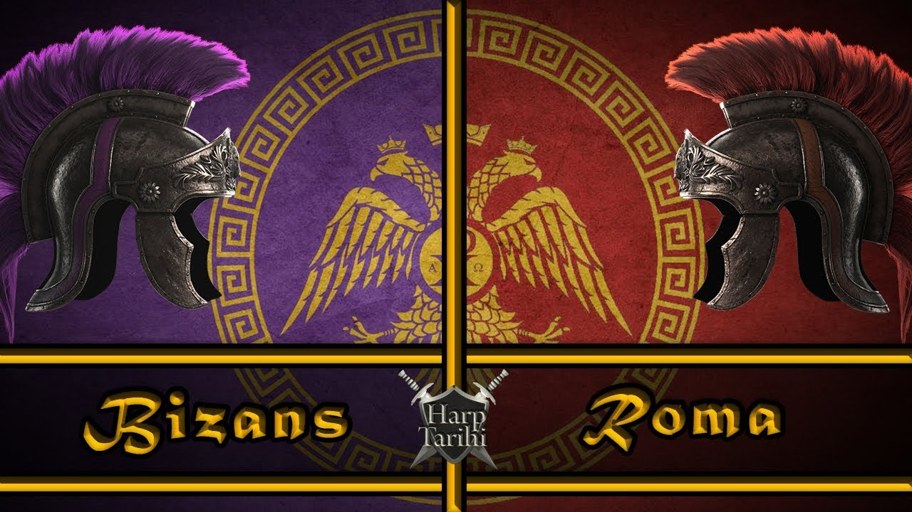
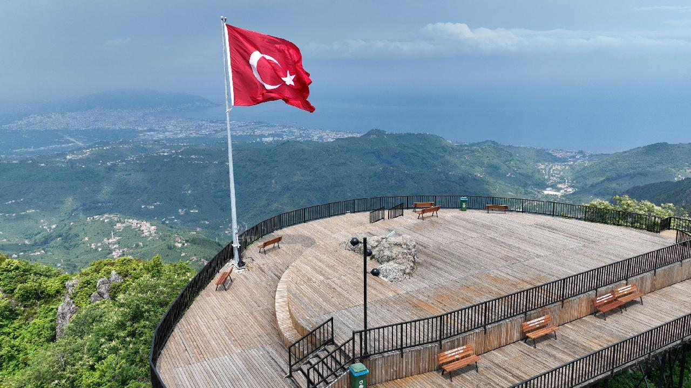

Tarihçe

Kolhis Uygarlığı
Ordu'nun tarihi M.Ö. 400'lü yıllara kadar dayanmaktadır. İlk yerleşimciler olarak bilinen Kolhisliler, bu topraklarda yaşamışlardır.

Roma ve Bizans Dönemi
Ordu, Roma ve Bizans İmparatorlukları'nın bir parçası olarak önemli ticaret yolları üzerinde bulunuyordu.
Osmanlı Dönemi
15. yüzyılda Osmanlı İmparatorluğu'nun egemenliğine giren Ordu, ticaret ve fındık üretimiyle tanındı.

Cumhuriyet Dönemi
Cumhuriyetin ilanından sonra Ordu hızla gelişti ve Karadeniz'in önemli bir şehri haline geldi.